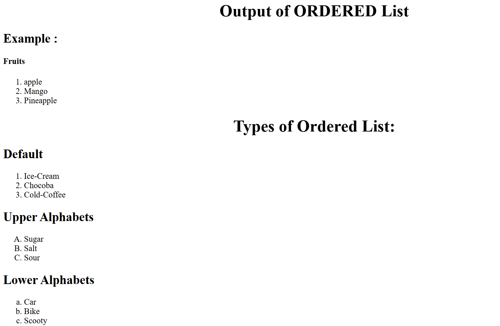
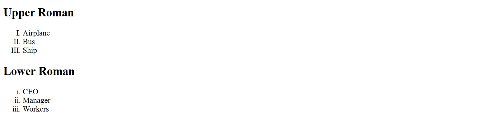

Creating an ORDERED List
An ordered list displays a list of items using numbers or letters in either ascending or descending order. To
create an ordered list of items, you can use the <ol> tag and the <li> tag. The <ol> tag is used to define an
ordered list; whereas, the <li> tag is used to define the items of the list.
Prior to HTML 5, the start attribute of the <ol> tag was deprecated. The start attribute starts the list with the
number specified in the start attribute value. However, in HTML 5, this attribute has been provided full Support. Along with this attribute, HTML 5 has introduced one more attribute known as reversed, which is Used to reverse the count. The reversed attribute is generally used for rankings or countdowns, such as ranking
a list of items in descending order.
Let's create an Ordered list:
Example :
<!DOCTYPE html>
<html>
<head>
<title>An ordered List</title>
</head>
<body>
<h4>Fruits </h4>
<ol>
<li>apple></li>
<li>Mango</li>
<li>Pineapple</li>
</ol>
</body>
</html>
Types of Ordered List:
Default
<ol type="1">
<li>Ice-Cream
</li>
<li>Chocoba
</li>
<li>Cold-Coffee
</li>
</ol>
Upper Alphabets
<ol type="A">
<li>Sugar
</li>
<li>Salt
</li>
<li>Sour
</li>
</ol>
Lower Alphabets
<ol type="a">
<li>Car
</li>
<li>Bike
</li>
<li>Scooty
</li>
</ol>
Upper Roman
<ol type="I">
<li>Airplane
</li>
<li>Bus
</li>
<li>Ship
</li>
</ol>
Lower Roman
<ol type="i">
<li>CEO
</li>
<li>Manager
</li>
<li>Workers
</li>
</ol>
OUTPUT

